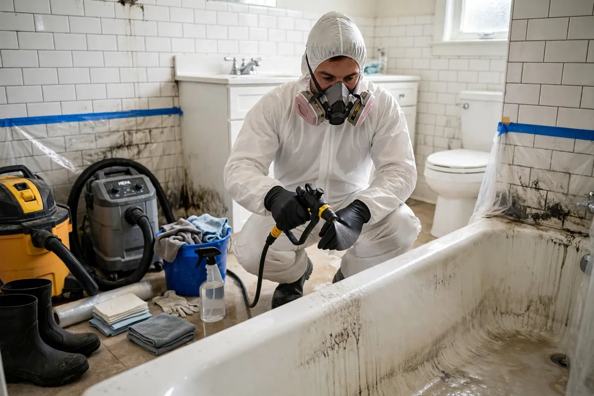

Sewage Backup Cleanup in Hollywood, FL
Sewage is not a water problem — it's a contamination problem that happens to involve water. Category 3 black water carries bacteria, viruses, and pathogens that make every porous material it touches unsalvageable and every surface it crosses a health risk. Sewage backup cleanup is a different discipline from ordinary water extraction: containment first, protective protocols throughout, removal of what can't be saved, and disinfection of what can.

Understanding Sewage Backup Cleanup in Hollywood
Backups arrive through floor drains, toilets, and tubs when municipal lines surcharge during heavy rain or when a main line clogs — and in Hollywood's older neighborhoods with mature tree roots, both happen. What comes up is never just water: it's a slurry of organic waste carrying the full spectrum of sewage pathogens. Carpet and pad, drywall, insulation, and baseboards that contact it cannot be cleaned reliably — their porous structure holds contamination no surface treatment can fully reach.
This is also the one water loss where DIY is genuinely dangerous. Without containment, foot traffic and airflow carry contamination into clean rooms; without proper protection, exposure risks are real. The work demands a different mindset from a clean-water leak: assume everything the sewage touched is compromised, remove it under controlled conditions, then clean and disinfect the hard surfaces that remain before any drying begins.
How We Handle the Job
The affected area is contained immediately to stop contamination from migrating — doors closed, airflow managed, foot traffic kept out. Under protective protocols, standing sewage is extracted and all porous materials it contacted are removed: carpet and pad, lower drywall sections, soaked insulation, baseboards. Hard surfaces — tile, concrete, framing — are then thoroughly cleaned and disinfected, because disinfection only works on clean surfaces. Only after the area is decontaminated does structural drying begin, with moisture readings verifying the final result.
We walk you through exactly what was removed and why — nothing salvageable gets discarded without explanation. Where the backup connects to a wider loss, related work such as emergency water extraction, structural drying, or flood cleanup may be part of the same job, always sequenced after decontamination, never before.
Local Response and Insurance Support
Searching for sewage backup cleanup near me usually means you need help without delay. We answer emergency calls around the clock. Documentation — photos and moisture readings — supports conversations with your insurance carrier when the loss is sudden and accidental. We do not decide coverage; we provide clear technical information about the work performed.
When to Call
Call if you have active water, wet materials that are not drying, odors after a leak, or a backup that may involve contaminated water. Early action in Hollywood’s climate is almost always less disruptive than waiting. For neighborhood-specific service, see our service areas. For the full list of capabilities, visit all services.
Frequently Asked Questions
A small backup — can I just clean it up myself?
We strongly advise against it. Category 3 water carries pathogens that make DIY cleanup a health risk, and without containment you can spread contamination through the house on shoes, airflow, and cleaning tools.
Does everything the sewage touched have to be thrown out?
Porous materials — carpet pad, drywall, insulation, baseboards — yes, when they've contacted sewage; their structure can't be reliably decontaminated. Hard surfaces like tile and concrete can be cleaned and disinfected.
How do you make the area safe again?
Contaminated porous materials are removed under containment, remaining hard surfaces are cleaned then disinfected, and the area is dried and verified. Safety comes from the sequence, not from any single step.
Will homeowners insurance cover a sewage backup?
It depends on your policy — many require a specific water/sewer backup endorsement. Document everything with photos from the start and check with your carrier about your coverage.